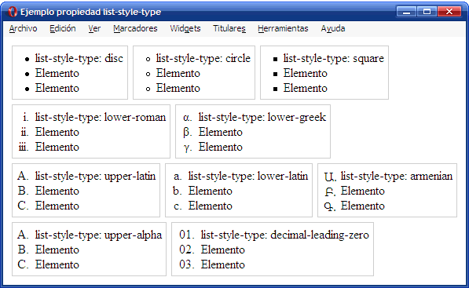

Flex Box
Es un módulo de diseño de CSS3 que se creó para mejorar la forma en la que se hace diseño responsive, evitando así el uso de float, escribiendo menos código y facilitando el posicionamiento de elementos, incluso no teniendo noción del tamaño de éstos. La propiedad Flexible Box, o Flexbox, es un modo de diseño, que permite colocar de una manera predecible nuestros elementos, cuando nuestro diseño debe adaptarse a diferentes tipos de tamaño de pantalla.

LISTAS EN HTML
HTML puede representar elementos en forma de lista en los documentos de forma sencilla y con gran versatilidad. Estas listas podrán incluir cualquiera de los elementos HTML e incluso se pueden definir listas anidadas es decir listas dentro de listas.HTML permite crear 3 tipos de listas
Listas de definiciones:DL(Definition List)
Estas listas sirven para especificar una serie de términos y sus definiciones correspondientes. Para la definición de la lista se usa la etiqueta DL/DL, para especificar los términos se usa la etiqueta DTy para especificar la definición correspondiente a cada termino se usa la etiqueta DD(Definition description).
Listas anidadas Con HTML se tiene la posibilidad en cualquier momento de anidar y mezclar los tipos de listas para crear de acuerdo a la necesidad.
 https://www.laurachuburu.com.ar. (23 de 11 de 2021). Obtenido de https://www.laurachuburu.com.ar: https://www.laurachuburu.com.ar/tutoriales/enlaces-html.php
M., J. P. (23 de 11 de 2021). https://3con14.biz. Obtenido de https://3con14.biz: https://3con14.biz/html/enlaces/13-tipos-de-enlaces.html
Muñoz, V. J. (23 de 11 de 2021). https://scholar.google.es. Obtenido de https://scholar.google.es: https://scholar.google.es/scholar?hl=es&lr=lang_es&as_sdt=0%2C5&q=listas+y+enlaces+html&btnG=
Muñoz, V. J. E. (2012). HTML, presente y futuro de la web. Vicente Javier Eslava Muñoz.
https://somospnt.com. (16 de 11 de 2021). Obtenido de https://somospnt.com: https://somospnt.com/blog/148-flexbox-que-es-y-para-que-sirve
https://lemoncode.net. (16 de 11 de 2021). Obtenido de https://lemoncode.net: https://lemoncode.net/lemoncode-blog/2016/12/28/flexbox-a-base-de-ejemplos
https://www.laurachuburu.com.ar. (23 de 11 de 2021). Obtenido de https://www.laurachuburu.com.ar: https://www.laurachuburu.com.ar/tutoriales/enlaces-html.php
M., J. P. (23 de 11 de 2021). https://3con14.biz. Obtenido de https://3con14.biz: https://3con14.biz/html/enlaces/13-tipos-de-enlaces.html
Muñoz, V. J. (23 de 11 de 2021). https://scholar.google.es. Obtenido de https://scholar.google.es: https://scholar.google.es/scholar?hl=es&lr=lang_es&as_sdt=0%2C5&q=listas+y+enlaces+html&btnG=
Muñoz, V. J. E. (2012). HTML, presente y futuro de la web. Vicente Javier Eslava Muñoz.
https://somospnt.com. (16 de 11 de 2021). Obtenido de https://somospnt.com: https://somospnt.com/blog/148-flexbox-que-es-y-para-que-sirve
https://lemoncode.net. (16 de 11 de 2021). Obtenido de https://lemoncode.net: https://lemoncode.net/lemoncode-blog/2016/12/28/flexbox-a-base-de-ejemplos